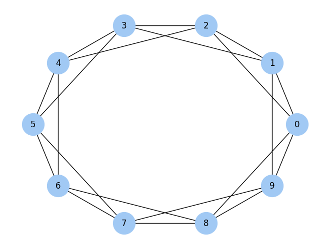
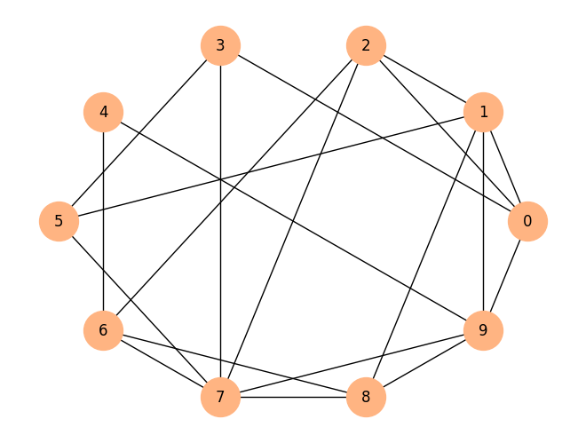
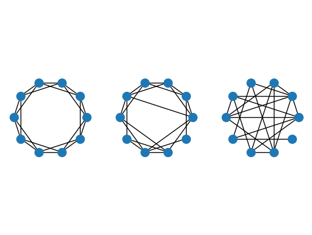
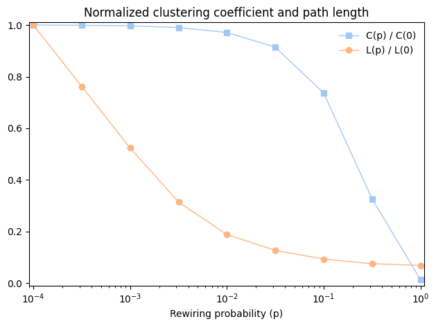
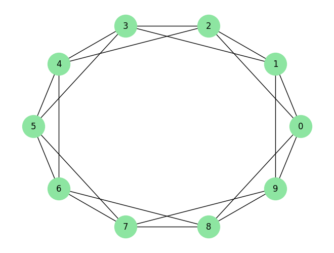
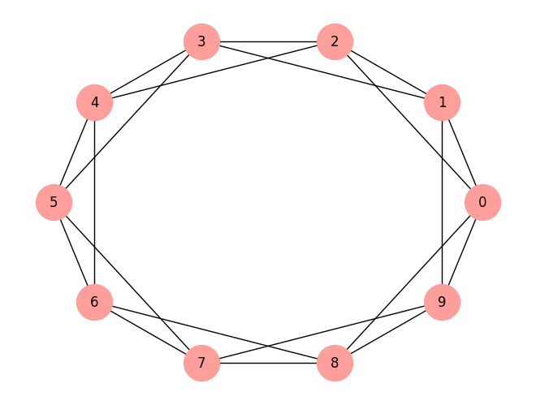

The second edition of Think Complexity is available from Bookshop.org and Amazon (those are affiliate links). If you are enjoying the free, online version, consider buying me a coffee.
3. Small World Graphs#
Many networks in the real world, including social networks, have the “small world property”, which is that the average distance between nodes, measured in number of edges on the shortest path, is much smaller than expected.
In this chapter, I present Stanley Milgram’s famous Small World Experiment, which was the first demonstration of the small world property in a real social network. Then we’ll consider Watts-Strogatz graphs, which are intended as a model of small world graphs. I’ll replicate the experiment Watts and Strogatz performed and explain what it is intended to show.
Along the way, we’ll see two new graph algorithms: breadth-first search (BFS) and Dijkstra’s algorithm for computing the shortest path between nodes in a graph.
Click here to run this notebook on Colab.
import matplotlib.pyplot as plt
import networkx as nx
import numpy as np
import seaborn as sns
Show code cell content
from os.path import basename, exists
def download(url):
filename = basename(url)
if not exists(filename):
from urllib.request import urlretrieve
local, _ = urlretrieve(url, filename)
print('Downloaded ' + local)
download('https://github.com/AllenDowney/ThinkComplexity/raw/v3/nb/utils.py')
from utils import decorate, savefig
# Set the random seed so the notebook
# produces the same results every time.
np.random.seed(17)
# make a directory for figures
!mkdir -p figs
# node colors for drawing networks
colors = sns.color_palette('pastel', 5)
#sns.palplot(colors)
sns.set_palette(colors)
3.1. Stanley Milgram#
Stanley Milgram was an American social psychologist who conducted two of the most famous experiments in social science, the Milgram experiment, which studied people’s obedience to authority (https://thinkcomplex.com/milgram) and the Small World Experiment, which studied the structure of social networks (https://thinkcomplex.com/small).
In the Small World Experiment, Milgram sent a package to several randomly-chosen people in Wichita, Kansas, with instructions asking them to forward an enclosed letter to a target person, identified by name and occupation, in Sharon, Massachusetts (which happens to be the town near Boston where I grew up). The subjects were told that they could mail the letter directly to the target person only if they knew him personally; otherwise they were instructed to send it, and the same instructions, to a relative or friend they thought would be more likely to know the target person.
Many of the letters were never delivered, but for the ones that were the average path length — the number of times the letters were forwarded — was about six. This result was taken to confirm previous observations (and speculations) that the typical distance between any two people in a social network is about “six degrees of separation”.
This conclusion is surprising because most people expect social networks to be localized — people tend to live near their friends — and in a graph with local connections, path lengths tend to increase in proportion to geographical distance. For example, most of my friends live nearby, so I would guess that the average distance between nodes in a social network is about 50 miles. Wichita is about 1600 miles from Boston, so if Milgram’s letters traversed typical links in the social network, they should have taken 32 hops, not 6.
3.2. Watts and Strogatz#
In 1998 Duncan Watts and Steven Strogatz published a paper in Nature, “Collective dynamics of ‘small-world’ networks”, that proposed an explanation for the small world phenomenon. You can download it from https://thinkcomplex.com/watts.
Watts and Strogatz start with two kinds of graph that were well understood: random graphs and regular graphs. In a random graph, nodes are connected at random. In a regular graph, every node has the same number of neighbors. They consider two properties of these graphs, clustering and path length:
Clustering is a measure of the “cliquishness” of the graph. In a graph, a clique is a subset of nodes that are all connected to each other; in a social network, a clique is a set of people who are all friends with each other. Watts and Strogatz defined a clustering coefficient that quantifies the likelihood that two nodes that are connected to the same node are also connected to each other.
Path length is a measure of the average distance between two nodes, which corresponds to the degrees of separation in a social network.
Watts and Strogatz show that regular graphs have high clustering and high path lengths, whereas random graphs with the same size usually have low clustering and low path lengths. So neither of these is a good model of social networks, which combine high clustering with short path lengths.
Their goal was to create a generative model of a social network. A generative model tries to explain a phenomenon by modeling the process that builds or leads to the phenomenon. Watts and Strogatz proposed this process for building small-world graphs:
Start with a regular graph with \(n\) nodes and each node connected to \(k\) neighbors.
Choose a subset of the edges and “rewire” them by replacing them with random edges.
The probability that an edge is rewired is a parameter, \(p\), that controls how random the graph is. With \(p=0\), the graph is regular; with \(p=1\) it is completely random.
Watts and Strogatz found that small values of \(p\) yield graphs with high clustering, like a regular graph, and low path lengths, like a random graph.
In this chapter I replicate the Watts and Strogatz experiment in the following steps:
We’ll start by constructing a ring lattice, which is a kind of regular graph.
Then we’ll rewire it as Watts and Strogatz did.
We’ll write a function to measure the degree of clustering and use a NetworkX function to compute path lengths.
Then we’ll compute the degree of clustering and path length for a range of values of \(p\).
Finally, I’ll present Dijkstra’s algorithm, which computes shortest paths efficiently.
3.3. Ring lattice#
A regular graph is a graph where each node has the same number of neighbors; the number of neighbors is also called the degree of the node.
A ring lattice is a kind of regular graph, which Watts and Strogatz use as the basis of their model. In a ring lattice with \(n\) nodes, the nodes can be arranged in a circle with each node connected to the \(k\) nearest neighbors.
For example, a ring lattice with \(n=3\) and \(k=2\) would contain the following edges: \((0, 1)\), \((1, 2)\), and \((2, 0)\). Notice that the edges “wrap around” from the highest-numbered node back to 0.
More generally, we can enumerate the edges like this:
def adjacent_edges(nodes, halfk):
"""Yields edges between each node and `halfk` neighbors.
halfk: number of edges from each node
"""
n = len(nodes)
for i, u in enumerate(nodes):
for j in range(i+1, i+halfk+1):
v = nodes[j % n]
yield u, v
adjacent_edges takes a list of nodes and a parameter, halfk, which is half of \(k\). It is a generator function that yields one edge at a time. It uses the modulus operator, %, to wrap around from the highest-numbered node to the lowest.
We can test it like this:
nodes = range(3)
for edge in adjacent_edges(nodes, 1):
print(edge)
(0, 1)
(1, 2)
(2, 0)
Now we can use adjacent_edges to make a ring lattice:
def make_ring_lattice(n, k):
"""Makes a ring lattice with `n` nodes and degree `k`.
Note: this only works correctly if k is even.
n: number of nodes
k: degree of each node
"""
G = nx.Graph()
nodes = range(n)
G.add_nodes_from(nodes)
G.add_edges_from(adjacent_edges(nodes, k//2))
return G
Notice that make_ring_lattice uses floor division to compute halfk, so it is only correct if k is even. If k is odd, floor division rounds down, so the result is a ring lattice with degree k-1. As one of the exercises at the end of the chapter, you will generate regular graphs with odd values of k.
We can test make_ring_lattice with \(n=10\) and \(k=4\):
lattice = make_ring_lattice(10, 4)
Here’s what the result looks like.
nx.draw_circular(lattice,
node_color='C0',
node_size=1000,
with_labels=True)
savefig('figs/chap03-1')
Saving figure to file figs/chap03-1

Exercise: To see how this function fails when k is odd, run it again with k=3 or k=5.
3.4. WS graphs#
To make a Watts-Strogatz (WS) graph, we start with a ring lattice and “rewire” some of the edges.
def make_ws_graph(n, k, p):
"""Makes a Watts-Strogatz graph.
n: number of nodes
k: degree of each node
p: probability of rewiring an edge
"""
ws = make_ring_lattice(n, k)
rewire(ws, p)
return ws
In their paper, Watts and Strogatz consider the edges in a particular order and rewire each one with probability \(p\). If an edge is rewired, they leave the first node unchanged and choose the second node at random. They don’t allow self loops or multiple edges; that is, you can’t have an edge from a node to itself, and you can’t have more than one edge between the same two nodes.
To choose which edges get rewired, we’ll need flip, which we saw in Chapter 2.
def flip(p):
"""Returns True with probability `p`."""
return np.random.random() < p
Here is my implementation of this process.
def rewire(G, p):
"""Rewires each edge with probability `p`.
G: Graph
p: float
"""
nodes = set(G)
for u, v in G.edges():
if flip(p):
choices = nodes - {u} - set(G[u])
new_v = np.random.choice(list(choices))
G.remove_edge(u, v)
G.add_edge(u, new_v)
The parameter p is the probability of rewiring an edge. The for loop enumerates the edges and uses flip to choose which ones get rewired.
If we are rewiring an edge from node u to node v, we have to choose a replacement for v, called new_v.
To compute the possible choices, we start with
nodes, which is a set, and subtract offuand its neighbors, which avoids self loops and multiple edges.To choose
new_v, we use the NumPy functionchoice, which is in the modulerandom.Then we remove the existing edge from
utov, andAdd a new edge from
utonew_v.
As an aside, the expression G[u] returns a dictionary that contains the neighbors of u as keys. It is usually faster than using G.neighbors (see https://thinkcomplex.com/neigh).
This function does not consider the edges in the order specified by Watts and Strogatz, but that doesn’t seem to affect the results.
Here’s an example with p=0.2:
ws = make_ws_graph(10, 4, 0.2)
nx.draw_circular(ws,
node_color='C1',
node_size=1000,
with_labels=True)

Just checking that we have the same number of edges we started with:
len(lattice.edges()), len(ws.edges())
(20, 20)
The following figure shows WS graphs with \(n=10\), \(k=4\), and a range of values of \(p\): \(p=0\) (left), \(p=0.2\) (middle), and \(p=1\) (right).
n = 10
k = 4
ns = 100
plt.subplot(1,3,1)
ws = make_ws_graph(n, k, 0)
nx.draw_circular(ws, node_size=ns)
plt.axis('equal')
plt.subplot(1,3,2)
ws = make_ws_graph(n, k, 0.2)
nx.draw_circular(ws, node_size=ns)
plt.axis('equal')
plt.subplot(1,3,3)
ws = make_ws_graph(n, k, 1.0)
nx.draw_circular(ws, node_size=ns)
plt.axis('equal')
savefig('figs/chap03-2')
Saving figure to file figs/chap03-2

When \(p=0\), the graph is a ring lattice. When \(p=1\), it is completely random. As we’ll see, the interesting things happen in between.
Exercise: What is the order of growth of rewire?
3.5. Clustering#
The next step is to compute the clustering coefficient, which quantifies the tendency for the nodes to form cliques. A clique is a set of nodes that are completely connected; that is, there are edges between all pairs of nodes in the set.
Suppose a particular node, \(u\), has \(k\) neighbors. If all of the neighbors are connected to each other, there would be \(k(k-1)/2\) edges among them. The fraction of those edges that actually exist is the local clustering coefficient for \(u\), denoted \(C_u\).
If we compute the average of \(C_u\) over all nodes, we get the “network average clustering coefficient”, denoted \(\bar{C}\).
Here is a function that computes the local clustering coefficient.
def node_clustering(G, u):
"""Computes local clustering coefficient for `u`.
G: Graph
u: node
returns: float
"""
neighbors = G[u]
k = len(neighbors)
if k < 2:
return np.nan
possible = k * (k-1) / 2
exist = 0
for v, w in all_pairs(neighbors):
if G.has_edge(v, w):
exist +=1
return exist / possible
Again I use G[u], which returns a dictionary with the neighbors of u as keys.
If a node has fewer than 2 neighbors, the clustering coefficient is undefined, so we return np.nan, which is a special value that indicates “Not a Number”.
Otherwise we compute the number of possible edges among the neighbors, count the number of those edges that actually exist, and return the fraction that exist.
node_clustering uses all_pairs, which we saw in Chapter 2:
def all_pairs(nodes):
"""Generates all pairs of nodes."""
for i, u in enumerate(nodes):
for j, v in enumerate(nodes):
if i < j:
yield u, v
We can test the function like this:
lattice = make_ring_lattice(10, 4)
node_clustering(lattice, 1)
0.5
In a ring lattice with \(k=4\), the clustering coefficient for each node is 0.5 (if you are not convinced, take another look at the first figure in this chapter).
Now we can compute the network average clustering coefficient like this:
def clustering_coefficient(G):
"""Average of the local clustering coefficients.
G: Graph
returns: float
"""
cu = [node_clustering(G, node) for node in G]
return np.nanmean(cu)
The NumPy function nanmean computes the mean of the local clustering coefficients, ignoring any values that are NaN.
We can test clustering_coefficient like this:
clustering_coefficient(lattice)
np.float64(0.5)
In this graph, the local clustering coefficient for all nodes is 0.5, so the average across nodes is 0.5. Of course, we expect this value to be different for WS graphs.
%timeit clustering_coefficient(lattice)
86.4 μs ± 4.61 μs per loop (mean ± std. dev. of 7 runs, 10,000 loops each)
Exercise: Write a version of node_clustering that replaces the for loop with a list comprehension. Is it faster?
%timeit clustering_coefficient(lattice)
227 μs ± 8.7 μs per loop (mean ± std. dev. of 7 runs, 1,000 loops each)
Exercise: What is the order of growth of clustering_coefficient in terms of n, m, and k?
3.6. Shortest path lengths#
The next step is to compute the characteristic path length, \(L\), which is the average length of the shortest path between each pair of nodes. To compute it, I’ll start with a function provided by NetworkX, shortest_path_length. I’ll use it to replicate the Watts and Strogatz experiment, then I’ll explain how it works.
Here’s a function that takes a graph and returns a list of shortest path lengths, one for each pair of nodes.
def path_lengths(G):
length_map = dict(nx.shortest_path_length(G))
lengths = [length_map[u][v] for u, v in all_pairs(G)]
return lengths
The return value from nx.shortest_path_length is an iterator of pairs; converting it to a dictionary yields a dictionary of dictionaries. The outer dictionary maps from each node, u, to a dictionary that maps from each node, v, to the length of the shortest path from u to v.
With the list of lengths from path_lengths, we can compute \(L\) like this:
def characteristic_path_length(G):
return np.mean(list(path_lengths(G)))
And we can test it with a small ring lattice:
lattice = make_ring_lattice(3, 2)
characteristic_path_length(lattice)
np.float64(1.0)
In this example, all 3 nodes are connected to each other, so the mean path length is 1.
Similarly, on a complete graph, the average path length should be 1:
complete = nx.complete_graph(10)
characteristic_path_length(complete)
np.float64(1.0)
On a ring lattice with n=1000 and k=10, the mean is about 50:
lattice = make_ring_lattice(1000, 10)
characteristic_path_length(lattice)
np.float64(50.450450450450454)
Exercise: What is the mean path length in a ring lattice with n=10 and k=4?
3.7. The WS experiment#
Now we are ready to replicate the WS experiment, which shows that for a range of values of \(p\), a WS graph has high clustering like a regular graph and short path lengths like a random graph.
I’ll start with run_one_graph, which takes n, k, and p; it generates a WS graph with the given parameters and computes the mean path length, mpl, and clustering coefficient, cc:
def run_one_graph(n, k, p):
"""Makes a WS graph and computes its stats.
n: number of nodes
k: degree of each node
p: probability of rewiring
returns: tuple of (mean path length, clustering coefficient)
"""
ws = make_ws_graph(n, k, p)
mpl = characteristic_path_length(ws)
cc = clustering_coefficient(ws)
print(mpl, cc)
return mpl, cc
Watts and Strogatz ran their experiment with n=1000 and k=10. With these parameters, run_one_graph takes a few seconds on my computer; most of that time is spent computing the mean path length.
%time run_one_graph(1000, 10, 0.01)
8.286914914914915 0.6443376623376623
CPU times: user 1.02 s, sys: 16 ms, total: 1.04 s
Wall time: 1.04 s
(np.float64(8.286914914914915), np.float64(0.6443376623376623))
Now we need to compute these values for a range of p. I’ll use the NumPy function logspace again to compute ps:
ps = np.logspace(-4, 0, 9)
print(ps)
[1.00000000e-04 3.16227766e-04 1.00000000e-03 3.16227766e-03
1.00000000e-02 3.16227766e-02 1.00000000e-01 3.16227766e-01
1.00000000e+00]
Here’s the function that runs the experiment:
def run_experiment(ps, n=1000, k=10, iters=10):
"""Computes stats for WS graphs with a range of `p`.
ps: sequence of `p` to try
n: number of nodes
k: degree of each node
iters: number of times to run for each `p`
returns:
"""
res = []
for p in ps:
print(p)
t = [run_one_graph(n, k, p) for _ in range(iters)]
means = np.array(t).mean(axis=0)
print(means)
res.append(means)
return np.array(res)
For each value of p, we generate 10 random graphs and average the results. Since the return value from run_one_graph is a pair, t is a list of pairs. When we convert it to an array, we get one row for each iteration and columns for L and C. Calling mean with the option axis=0 computes the mean of each column; the result is an array with one row and two columns.
When the loop exits, means is a list of pairs, which we convert to a NumPy array with one row for each value of p and columns for L and C.
Here are the raw results. Warning: this takes a few minutes to run.
%time res = run_experiment(ps)
0.0001
40.558644644644644 0.6664232323232322
50.450450450450454 0.6666666666666665
50.450450450450454 0.6666666666666665
42.54351351351352 0.6664232323232322
50.450450450450454 0.6666666666666665
47.28726326326326 0.6662787878787878
50.450450450450454 0.6666666666666665
49.82804004004004 0.66635101010101
40.110276276276274 0.6661343434343433
50.450450450450454 0.6666666666666665
[47.257999 0.66649439]
0.00031622776601683794
27.997943943943945 0.6656474747474747
35.00438238238238 0.6660353535353535
34.869533533533534 0.6661075757575756
40.47128128128128 0.6661343434343433
28.3858018018018 0.6648262626262625
32.83867067067067 0.665430808080808
26.27136136136136 0.6652595959595958
44.595467467467465 0.6657499999999998
50.450450450450454 0.6666666666666665
39.24145745745746 0.6662065656565656
[36.01263504 0.66580646]
0.001
25.31946146146146 0.6642671717171716
23.974042042042043 0.6644570707070707
26.606564564564565 0.6650469696969696
27.64162162162162 0.6647994949494949
27.771625625625624 0.664970707070707
21.04740740740741 0.6645601010101009
25.959245245245246 0.6653318181818181
20.424486486486487 0.6621393939393938
24.619961961961963 0.664050505050505
24.214372372372374 0.663590404040404
[24.75787888 0.66432136]
0.0031622776601683794
11.764506506506507 0.6579535353535353
14.608458458458458 0.6606464646464646
13.301973973973974 0.6601491341991341
17.14306706706707 0.6602171717171718
13.312592592592592 0.6594352813852813
13.043293293293294 0.6587242424242423
19.55924924924925 0.6623146464646464
18.38045045045045 0.6611681818181818
14.776588588588588 0.6612161616161616
12.845355355355355 0.6589601010101009
[14.87355355 0.66007849]
0.01
7.80816016016016 0.6417193362193361
8.838108108108107 0.6475658008658008
9.7646006006006 0.6517371572871573
9.715663663663664 0.6495540404040404
8.320296296296297 0.643379797979798
8.561213213213213 0.6455775613275613
9.172128128128127 0.6476368686868686
8.48614014014014 0.6468714285714287
8.940568568568569 0.6482772727272728
9.45082882882883 0.6500584415584415
[8.90577077 0.64723777]
0.03162277660168379
5.963993993993994 0.6077493506493507
5.9501621621621625 0.6090330502830503
5.998762762762762 0.6084161893661895
6.01980980980981 0.608768759018759
5.961185185185185 0.6054075036075036
6.089197197197197 0.6109230158730159
6.069805805805806 0.6097416305916306
6.272324324324324 0.6168896103896104
5.934808808808809 0.6070453102453103
5.992616616616616 0.6102109668109668
[6.02526667 0.60941854]
0.1
4.395113113113113 0.4859027583527583
4.407911911911912 0.48549335109335107
4.368984984984985 0.47735145965145964
4.428724724724725 0.4960436369186369
4.419787787787787 0.4898358696858697
4.42217017017017 0.49066799866799865
4.452494494494495 0.49600636030636025
4.424342342342342 0.49285528915528914
4.468266266266267 0.49973649683649685
4.446034034034034 0.49286443556443554
[4.42338298 0.49067577]
0.31622776601683794
3.5764504504504506 0.2153300394050394
3.587995995995996 0.2264512876012876
3.5803383383383385 0.2158238872238872
3.5872232232232233 0.22358244255744256
3.563825825825826 0.210626328083681
3.5795515515515515 0.21813316128316126
3.5695595595595595 0.21473274307391954
3.5744184184184182 0.21397110112110113
3.5832932932932935 0.21822162004662005
3.581605605605606 0.22271169941169938
[3.57842623 0.21795843]
1.0
3.2686906906906907 0.009298524514700986
3.2667807807807807 0.009269463027632964
3.267945945945946 0.008302852102301708
3.268860860860861 0.010096887348977132
3.271117117117117 0.008161807147101264
3.2675615615615614 0.00952246838129191
3.2704664664664667 0.008854503503032914
3.265917917917918 0.009702446006006378
3.2695915915915914 0.011236585473350179
3.270194194194194 0.009963493859082096
[3.26871271 0.0094409 ]
CPU times: user 1min 45s, sys: 1.74 s, total: 1min 46s
Wall time: 1min 46s
res
array([[4.72579990e+01, 6.66494394e-01],
[3.60126350e+01, 6.65806465e-01],
[2.47578789e+01, 6.64321364e-01],
[1.48735536e+01, 6.60078492e-01],
[8.90577077e+00, 6.47237771e-01],
[6.02526667e+00, 6.09418539e-01],
[4.42338298e+00, 4.90675766e-01],
[3.57842623e+00, 2.17958431e-01],
[3.26871271e+00, 9.44090314e-03]])
We can extract the columns like this:
L, C = np.transpose(res)
L
array([47.257999 , 36.01263504, 24.75787888, 14.87355355, 8.90577077,
6.02526667, 4.42338298, 3.57842623, 3.26871271])
C
array([0.66649439, 0.66580646, 0.66432136, 0.66007849, 0.64723777,
0.60941854, 0.49067577, 0.21795843, 0.0094409 ])
In order to plot L and C on the same axes, we standardize them by dividing through by the first element:
L /= L[0]
C /= C[0]
The following figure shows the clustering coefficient © and characteristic path length (L) for WS graphs with \(n=1000\), \(k=10\), and a range of \(p\). It replicates Figure 2 in the Watts and Strogatz paper.
plt.plot(ps, C, 's-', linewidth=1, label='C(p) / C(0)')
plt.plot(ps, L, 'o-', linewidth=1, label='L(p) / L(0)')
decorate(xlabel='Rewiring probability (p)', xscale='log',
title='Normalized clustering coefficient and path length',
xlim=[0.00009, 1.1], ylim=[-0.01, 1.01])
savefig('figs/chap03-3')
Saving figure to file figs/chap03-3

As \(p\) increases, the mean path length drops quickly, because even a small number of randomly rewired edges provide shortcuts between regions of the graph that are far apart in the lattice. On the other hand, removing local links decreases the clustering coefficient much more slowly.
As a result, there is a wide range of \(p\) where a WS graph has the properties of a small world graph, high clustering and low path lengths.
And that’s why Watts and Strogatz propose WS graphs as a model for real-world networks that exhibit the small world phenomenon.
3.8. What kind of explanation is that?#
If you ask me why planetary orbits are elliptical, I might start by modeling a planet and a star as point masses; I would look up the law of universal gravitation at https://thinkcomplex.com/grav and use it to write a differential equation for the motion of the planet. Then I would either derive the orbit equation or, more likely, look it up at https://thinkcomplex.com/orbit. With a little algebra, I could derive the conditions that yield an elliptical orbit. Then I would argue that the objects we consider planets satisfy these conditions.
People, or at least scientists, are generally satisfied with this kind of explanation. One of the reasons for its appeal is that the assumptions and approximations in the model seem reasonable. Planets and stars are not really point masses, but the distances between them are so big that their actual sizes are negligible. Planets in the same solar system can affect each other’s orbits, but the effect is usually small. And we ignore relativistic effects, again on the assumption that they are small.
This explanation is also appealing because it is equation-based. We can express the orbit equation in a closed form, which means that we can compute orbits efficiently. It also means that we can derive general expressions for the orbital velocity, orbital period, and other quantities.
Finally, I think this kind of explanation is appealing because it has the form of a mathematical proof. It is important to remember that the proof pertains to the model and not the real world. That is, we can prove that an idealized model yields elliptical orbits, but we can’t prove that real orbits are ellipses (in fact, they are not). Nevertheless, the resemblance to a proof is appealing.
By comparison, Watts and Strogatz’s explanation of the small world phenomenon may seem less satisfying. First, the model is more abstract, which is to say less realistic. Second, the results are generated by simulation, not by mathematical analysis. Finally, the results seem less like a proof and more like an example.
Many of the models in this book are like the Watts and Strogatz model: abstract, simulation-based and (at least superficially) less formal than conventional mathematical models. One of the goals of this book is to consider the questions these models raise:
What kind of work can these models do: are they predictive, or explanatory, or both?
Are the explanations these models offer less satisfying than explanations based on more traditional models? Why?
How should we characterize the differences between these and more conventional models? Are they different in kind or only in degree?
Over the course of the book I will offer my answers to these questions, but they are tentative and sometimes speculative. I encourage you to consider them skeptically and reach your own conclusions.
3.9. Breadth-First Search#
When we computed shortest paths, we used a function provided by NetworkX, but I have not explained how it works. To do that, I’ll start with breadth-first search, which is the basis of Dijkstra’s algorithm for computing shortest paths.
In Chapter 2 I presented reachable_nodes, which finds all the nodes that can be reached from a given starting node:
def reachable_nodes(G, start):
seen = set()
stack = [start]
while stack:
node = stack.pop()
if node not in seen:
seen.add(node)
stack.extend(G.neighbors(node))
return seen
I didn’t say so at the time, but reachable_nodes performs a depth-first search (DFS). Now we’ll modify it to perform breadth-first search (BFS).
To understand the difference, imagine you are exploring a castle. You start in a room with three doors marked A, B, and C. You open door C and discover another room, with doors marked D, E, and F.
Which door do you open next? If you are feeling adventurous, you might want to go deeper into the castle and choose D, E, or F. That would be a depth-first search.
But if you wanted to be more systematic, you might go back and explore A and B before D, E, and F. That would be a breadth-first search.
In reachable_nodes, we use the list method pop to choose the next node to “explore”. By default, pop returns the last element of the list, which is the last one we added. In the example, that would be door F.
If we want to perform a BFS instead, the simplest solution is to pop the first element of the list:
node = stack.pop(0)
That works, but it is slow. In Python, popping the last element of a list takes constant time, but popping the first element is linear in the length of the list. In the worst case, the length of the stack is \(O(n)\), which makes this implementation of BFS \(O(nm)\), which is much worse than what it should be, \(O(n + m)\).
We can solve this problem with a double-ended queue, also known as a deque. The important feature of a deque is that you can add and remove elements from the beginning or end in constant time. To see how it is implemented, see https://thinkcomplex.com/deque.
Python provides a deque in the collections module, and we can use it to write an efficient BFS:
from collections import deque
def reachable_nodes_bfs(G, start):
"""Finds reachable nodes by BFS.
G: graph
start: node to start at
returns: set of reachable nodes
"""
seen = set()
queue = deque([start])
while queue:
node = queue.popleft()
if node not in seen:
seen.add(node)
queue.extend(G.neighbors(node))
return seen
The differences are:
I replaced the list called
stackwith a deque calledqueue.I replaced
popwithpopleft, which removes and returns the leftmost element of the queue.
This version is back to being \(O(n + m)\).
We’ll test it on our old friend, the ring lattice:
lattice = make_ring_lattice(10, 4)
nx.draw_circular(lattice,
node_color='C2',
node_size=1000,
with_labels=True)

It works:
reachable_nodes_bfs(lattice, 0)
{0, 1, 2, 3, 4, 5, 6, 7, 8, 9}
Here’s a version that’s a little faster, but maybe less readable.
def reachable_nodes_bfs(G, start):
"""Finds reachable nodes by BFS.
G: graph
start: node to start at
returns: set of reachable nodes
"""
seen = set()
queue = deque([start])
while queue:
node = queue.popleft()
if node not in seen:
seen.add(node)
neighbors = set(G[node]) - seen
queue.extend(neighbors)
return seen
It works, too.
reachable_nodes_bfs(lattice, 0)
{0, 1, 2, 3, 4, 5, 6, 7, 8, 9}
Now we’re ready to find shortest paths.
3.10. Dijkstra’s algorithm#
Edsger W. Dijkstra was a Dutch computer scientist who invented an efficient shortest-path algorithm (see https://thinkcomplex.com/dijk). He also invented the semaphore, which is a data structure used to coordinate programs that communicate with each other (see https://thinkcomplex.com/sem and Downey, The Little Book of Semaphores).
Dijkstra is famous (and notorious) as the author of a series of essays on computer science. Some, like “A Case against the GO TO Statement”, had a profound effect on programming practice. Others, like “On the Cruelty of Really Teaching Computing Science”, are entertaining in their cantankerousness, but less effective.
Dijkstra’s algorithm solves the “single source shortest path problem”, which means that it finds the minimum distance from a given “source” node to every other node in the graph (or at least every connected node).
I’ll present a simplified version of the algorithm that considers all edges the same length. The more general version works with any non-negative edge lengths.
The simplified version is similar to the breadth-first search in the previous section except that we replace the set called seen with a dictionary called dist, which maps from each node to its distance from the source:
def shortest_path_dijkstra(G, source):
"""Finds shortest paths from `source` to all other nodes.
G: graph
source: node to start at
returns: make from node to path length
"""
dist = {source: 0}
queue = deque([source])
while queue:
node = queue.popleft()
new_dist = dist[node] + 1
neighbors = set(G[node]).difference(dist)
for n in neighbors:
dist[n] = new_dist
queue.extend(neighbors)
return dist
Here’s how it works:
Initially,
queuecontains a single element,source, anddistmaps fromsourceto distance 0 (which is the distance fromsourceto itself).Each time through the loop, we use
popleftto select the next node in the queue.Next we find all neighbors of
nodethat are not already indist.Since the distance from
sourcetonodeisdist[node], the distance to any of the undiscovered neighbors isdist[node]+1.For each neighbor, we add an entry to
dist, then we add the neighbors to the queue.
This algorithm only works if we use BFS, not DFS. To see why, consider this:
The first time through the loop
nodeissource, andnew_distis 1. So the neighbors ofsourceget distance 1 and they go in the queue.When we process the neighbors of
source, all of their neighbors get distance 2. We know that none of them can have distance 1, because if they did, we would have discovered them during the first iteration.Similarly, when we process the nodes with distance 2, we give their neighbors distance 3. We know that none of them can have distance 1 or 2, because if they did, we would have discovered them during a previous iteration.
And so on. If you are familiar with proof by induction, you can see where this is going.
But this argument only works if we process all nodes with distance 1 before we start processing nodes with distance 2, and so on. And that’s exactly what BFS does.
In the exercises at the end of this chapter, you’ll write a version of Dijkstra’s algorithm using DFS, so you’ll have a chance to see what goes wrong.
Again, we’ll test it on a ring lattice.
lattice = make_ring_lattice(10, 4)
nx.draw_circular(lattice,
node_color='C3',
node_size=1000,
with_labels=True)

Here’s my implementation:
d1 = shortest_path_dijkstra(lattice, 0)
d1
{0: 0, 8: 1, 1: 1, 2: 1, 9: 1, 6: 2, 7: 2, 3: 2, 4: 2, 5: 3}
And here’s the result from NetworkX:
d2 = nx.shortest_path_length(lattice, 0)
d2
{0: 0, 1: 1, 2: 1, 8: 1, 9: 1, 3: 2, 4: 2, 6: 2, 7: 2, 5: 3}
They are the same:
d1 == d2
True
Exercise: In a ring lattice with n=1000 and k=10, which node is farthest from 0 and how far is it? Use shortest_path_dijkstra to check your answer.
Note: the maximum distance between two nodes is the diameter of the graph.
3.11. Exercises#
Exercise: In a ring lattice, every node has the same number of neighbors. The number of neighbors is called the degree of the node, and a graph where all nodes have the same degree is called a regular graph.
All ring lattices are regular, but not all regular graphs are ring lattices. In particular, if k is odd, we can’t construct a ring lattice, but we might be able to construct a regular graph.
Write a function called make_regular_graph that takes n and k and returns a regular graph that contains n nodes, where every node has k neighbors. If it’s not possible to make a regular graph with the given values of n and k, the function should raise a ValueError.
# Here's `adjacent_edges` again for comparison:
def adjacent_edges(nodes, halfk):
n = len(nodes)
for i, u in enumerate(nodes):
for j in range(i+1, i+halfk+1):
v = nodes[j % n]
yield u, v
Exercise: My implementation of reachable_nodes_bfs is efficient in the sense that it is in \(O(n + m)\), but it incurs a lot of overhead adding nodes to the queue and removing them. NetworkX provides a simple, fast implementation of BFS, available from the NetworkX repository on GitHub.
Here is a version I modified to return a set of nodes:
def plain_bfs(G, start):
"""A fast BFS node generator"""
seen = set()
nextlevel = {start}
while nextlevel:
thislevel = nextlevel
nextlevel = set()
for v in thislevel:
if v not in seen:
seen.add(v)
nextlevel.update(G[v])
return seen
Compare this function to reachable_nodes_bfs and see which is faster. Then see if you can modify this function to implement a faster version of shortest_path_dijkstra.
Exercise: The following implementation of a BFS contains two performance errors. What are they? What is the actual order of growth for this algorithm?
def bfs(G, start):
"""Breadth-first search on a graph, starting at top_node."""
visited = set()
queue = [start]
while len(queue):
curr_node = queue.pop(0) # Dequeue
visited.add(curr_node)
# Enqueue non-visited and non-enqueued children
queue.extend(c for c in G[curr_node]
if c not in visited and c not in queue)
return visited
Exercise: In the “Dijkstra’s algorithm” section, I claimed that Dijkstra’s algorithm does not work unless it uses BFS. Write a version of shortest_path_dijkstra that uses DFS and test it on a few examples to see what goes wrong.
Exercise: A natural question about the Watts and Strogatz paper is whether the small world phenomenon is specific to their generative model or whether other similar models yield the same qualitative result (high clustering and low path lengths).
To answer this question, choose a variation of the Watts and Strogatz model and repeat the experiment. There are two kinds of variation you might consider:
Instead of starting with a regular graph, start with another graph with high clustering. For example, you could put nodes at random locations in a 2-D space and connect each node to its nearest \(k\) neighbors.
Experiment with different kinds of rewiring.
If a range of similar models yield similar behavior, we say that the results of the paper are robust.
Exercise: Dijkstra’s algorithm solves the “single source shortest path” problem, but to compute the characteristic path length of a graph, we actually want to solve the “all pairs shortest path” problem.
Of course, one option is to run Dijkstra’s algorithm \(n\) times, once for each starting node. And for some applications, that’s probably good enough. But there are more efficient alternatives.
Find an algorithm for the all-pairs shortest path problem and implement it. See https://thinkcomplex.com/short.
Compare the run time of your implementation with running Dijkstra’s algorithm \(n\) times. Which algorithm is better in theory? Which is better in practice? Which one does NetworkX use?
Copyright 2016 Allen B. Downey
Code license: MIT License
Text license: Creative Commons Attribution-NonCommercial-ShareAlike 4.0 International